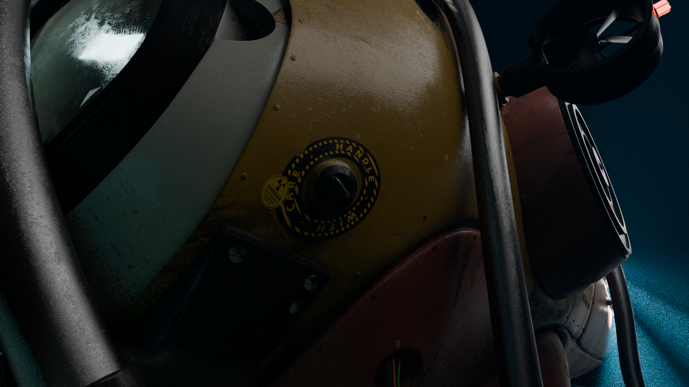
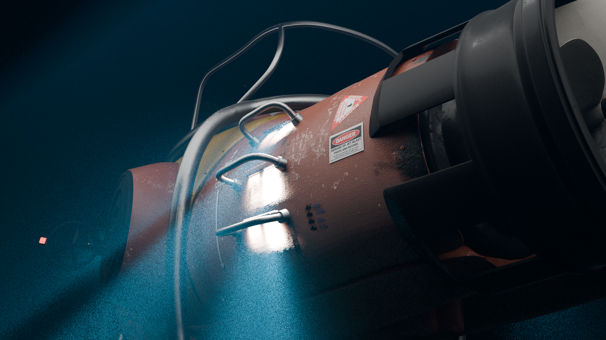
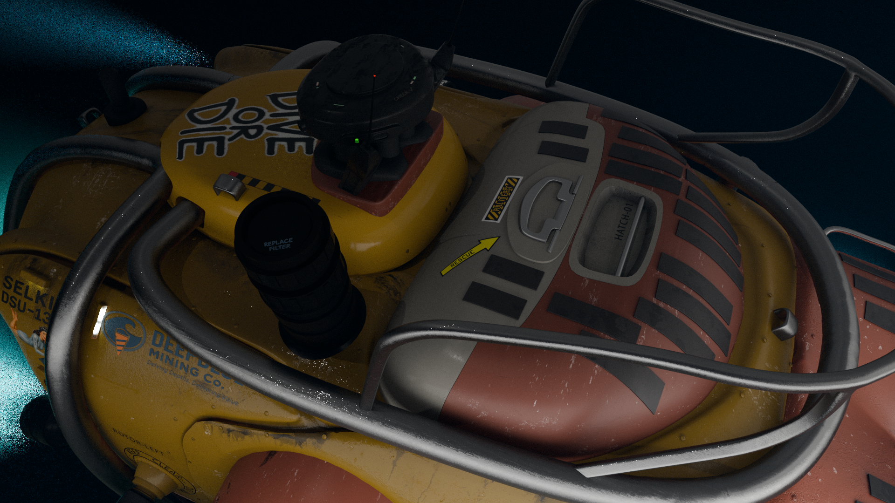
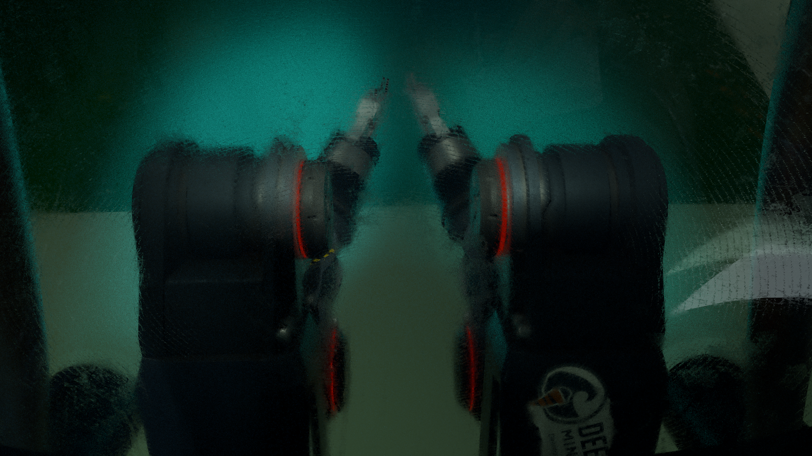
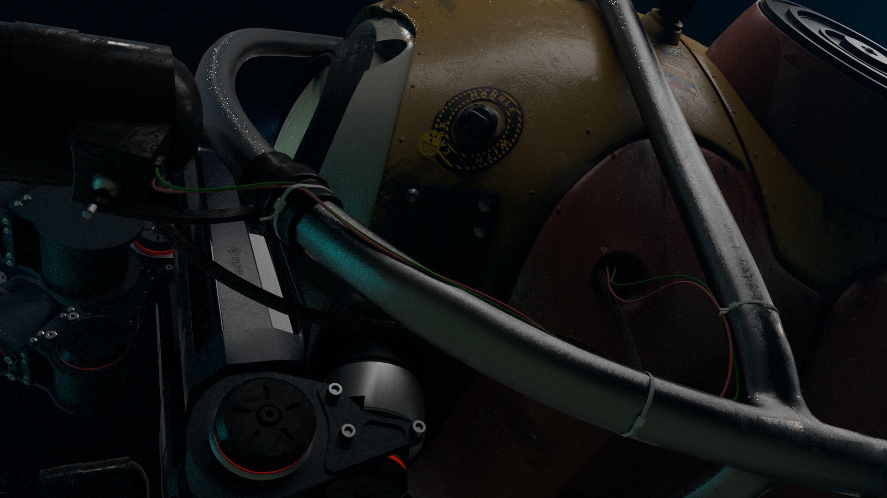
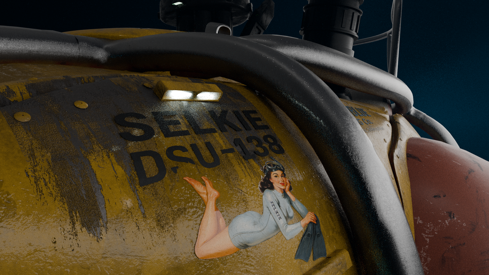
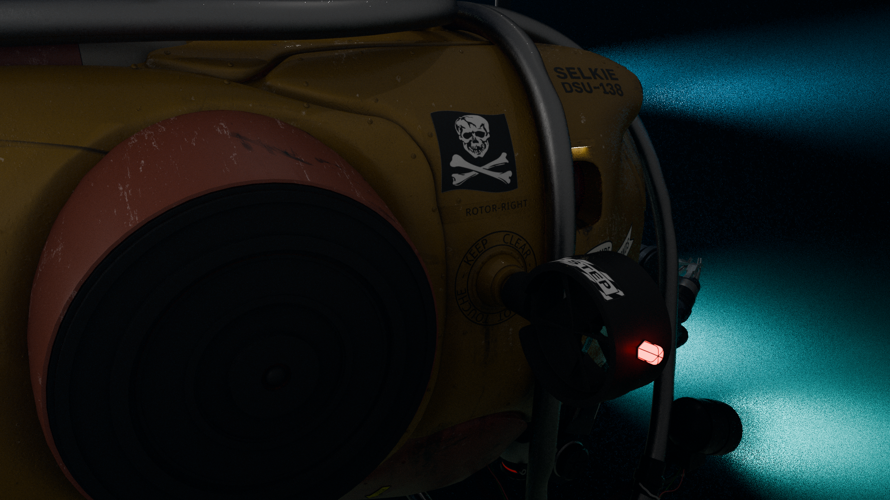

Le sous-marin d'exploration est conçu comme un personnage à part entière dans Bellow Challenger Deep. Inspiré des véhicules de forage et d'exploration des grandes profondeurs réels, il est traité pour paraître industriel, lourd, et à peine capable de survivre aux pressions extrêmes du fond de l'océan.
Aucune visibilité directe depuis le cockpit — uniquement des caméras. Tableaux de bord surchargés, métal rayé, cuir usé, soudures renforcées. Un design ancré dans la réalité des technologies actuelles, poussé à la limite de ce qui est supportable visuellement.





